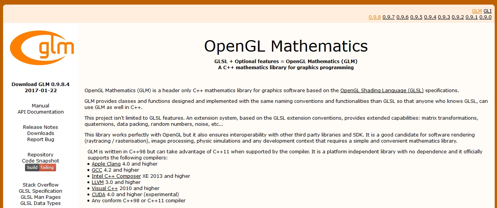
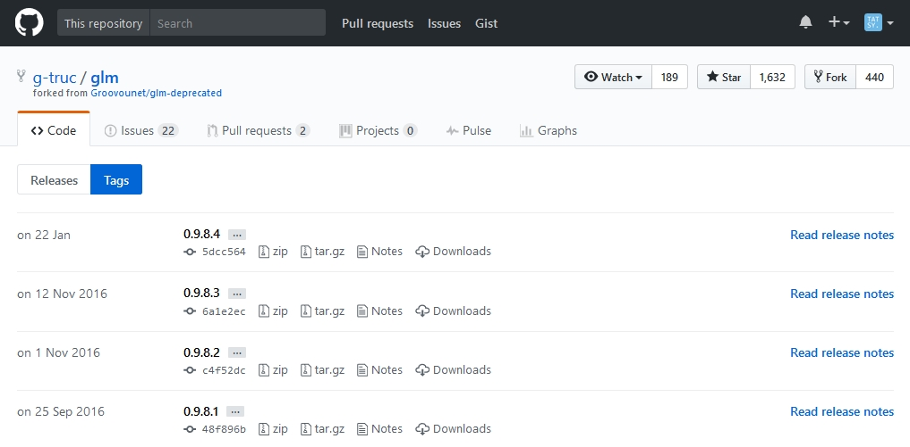

1.2. GLMのインストール¶
GLMのインストール (Windowsの場合)¶
GLMも公式のウェブページからライブラリをダウンロードします。
上記のウェブページの左側にある「Downloads」というリンクをクリックします。 するとダウンロードページに移動するので、その中から最新版である0.9.9.5をダウンロードします (2019年4月1日現在) 。 ダウンロードしたファイルは「glm-0.9.9.5.zip」という名前になっているはずです。
ダウンロードが完了したら、ZIPファイルを展開して適当なディレクトリに配置します。
プロパティシートの更新¶
初回の準備の際に作成したプロパティシートを更新して、GLEWおよびGLMを使用できるようにします。
設定方法に関しては、GLFWの設定 (初回の設定) を参照してください。設定項目は以下の通りです。
VC++ ディレクトリ¶
インクルードディレクトリ
C:\Libraries\opengl\glm-0.9.8.4 (GLM)
GLMのインストール (Macの場合)¶
GLMのGitHub からソースコードを ダウンロードして、ビルドとインストールを行います。次のコマンドをターミナルで実行してください。
1 2 3 4 5 6 | git clone https://github.com/g-truc/glm.git
cd glm
mkdir build && cd build
cmake ..
make
sudo make install
|
これだけでインストールは完了です。
Xcodeの設定¶
Macの場合、上記のコマンドでGLMは /usr/local/include というシステム全体から見える場所にインストールされるため、Xcodeでインクルード・ディレクトリ等を設定する必要ありません。